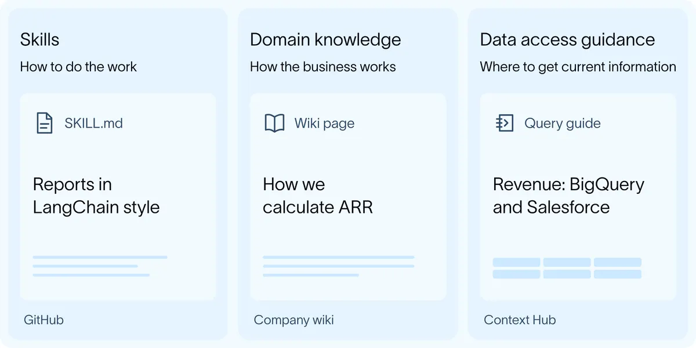
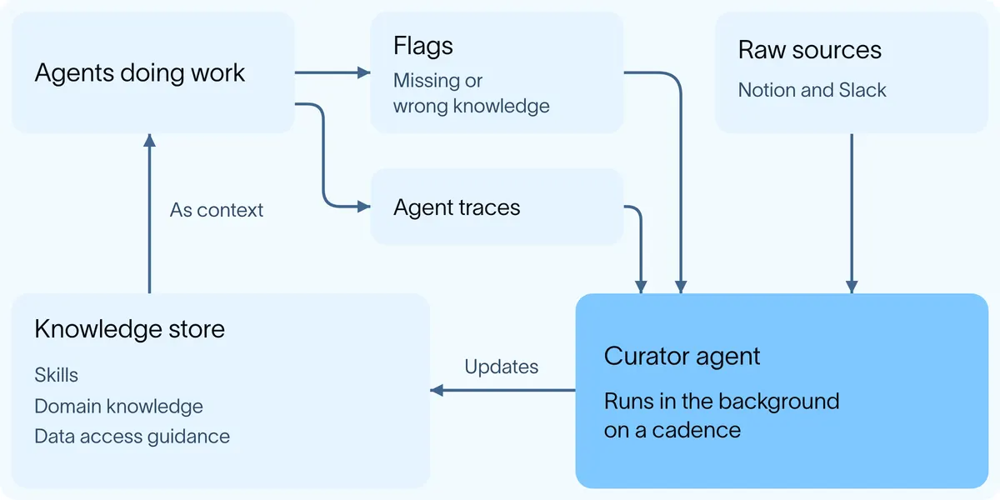

知識工廠：代理缺的不是模型，是公司的常備知識
導讀原文：How to build a knowledge factory for AI agents（LangChain 官方部落格方法文；把「軟體工廠」的思路搬到知識工作上，說明知識工廠的三類內容、回報與策展的分工，並以營收報告為例走完一圈）
導入代理卡住的不是模型，而是「這家公司怎麼做事」從沒被寫下來過。
原文先把兩個常被混用的詞分開。context 是代理執行任務當下拿得到的東西；knowledge 是可重用的理解。
後者包含指標怎麼算、該信哪個來源、某種狀況怎麼處理。它經常只存在最有效率那位員工的腦裡。
知識工廠就是把散落的文件與經驗，整理成下一輪工作可用的知識。它是 context 的一種，但不該是唯一一種。
| 類別 | 原文定義 | 原文舉的例子 |
|---|---|---|
| Skills | 公司要求「怎麼做」的程序、指令與腳本 | 用 LangChain 的規格寫營收報告 |
| Domain knowledge | 業務怎麼運作：定義、政策、產品、客戶、競品 | ARR 的計算方式（存在公司 wiki） |
| Data access | 資料在哪、該用哪個來源、怎麼查 | BigQuery 與 Salesforce 的取數方式 |

界線也劃了：資料的 source of truth 若已完整、即時，就不必再維護一份副本，要寫的是「指引」。
變動很快的數字因此不進知識庫。它已經躺在你的資料倉儲裡，直接餵給代理就好；知識工廠維護的是「怎麼查」。
格式也留了餘地：技能已收斂成「程序記憶」的共識，語意記憶還沒有人定標準，太早規定只會綁住自己。
回報與修訂分開：兩個代理各做一件事

工作中的代理被賦予的是回報的責任：至少能說出哪裡錯，最好順便建議正確版本。
原文的顧慮是「不該只由使用知識的代理維護」：它們擅長標記問題，修正卻得靠對底層知識的深入理解；讓只顧自己任務的代理去維護，知識會長成互相矛盾的一團。
修訂交給策展代理，在背景按節奏跑。它要讀得到 Notion、Slack 這類原始來源，也要讀得到代理的 traces。
有了 traces，它才能把「大家實際怎麼用代理」寫成 skill，而不是憑空發明流程。
手動維護被直接否決：那是原文口中的「herculean effort」，人力終究跟不上。
這個類比借自軟體工廠：先建好系統，再把量產交給代理，而不是要每個高手親自下場。
至於知識放哪，原文說最不重要——GitHub 的 skill 檔、Notion 單頁、Context Hub 的 OKF、Neo4j 都行；前提只有一個：策展代理要會操作這些格式，原文認為這不算難。
走一圈：一份營收報告怎麼把缺口補上
- 01代理 → BigQuery／Salesforce取原始營收數字，這是 base context，不是知識
- 02代理 → 回報工具發現欄位被改名，自己找到新欄位並標記建議
- 03財務主管 ⇄ 代理同步修格式，並指定往後文件要用的新表頭
- 04策展代理 → 知識庫當晚讀回報與 traces，更新取數與產報的 skill
本站重繪；四步依原文敘述順序整理（原文以「After…」「That night…」交代先後），原文未提供此四步的流程圖。
這圈同時用到三類知識：GitHub 上的報告 skill、wiki 上的 ARR 定義、Context Hub 上的取數 skill。
（編輯觀點：第 03 步是整篇的關鍵。）人類沒有去改文件，只是在協作中把偏好講出來，由策展代理事後抄進規則。
（編輯觀點：這個結論很務實。）原文接著說：不要等文件寫完才讓代理上工。讓工作本身揭露缺什麼，補上就讓下一次更好。
起點也一樣：挑一個重複發生的流程，看代理卡在哪，把那個缺口補起來。
LangChain 自述自家 GTM 與內容工作室代理由知識工廠供給，LangSmith Engine 則為每個代理各維護一份；另正與少數客戶導入，原文未提供量化成效。
帶走三件事
知識工廠不是知識庫。差別在有人回報、有人定期上門修。
別讓幹活的代理獨自維護規則。它會為自己的任務把標準寫歪。
先做一條流程。缺口是被工作逼出來的，不是先想出來的。
同一主題的其他館藏
導讀為本站編輯內容（AI 摘解自原文與館藏重點，非官方文件）；引述內容出自原文，圖解與小標為編輯整理。兩張示意圖為原文本站自託管、未經改作；時序圖為本站依原文文字重排。內容經對照原文的獨立事實審查後發布。